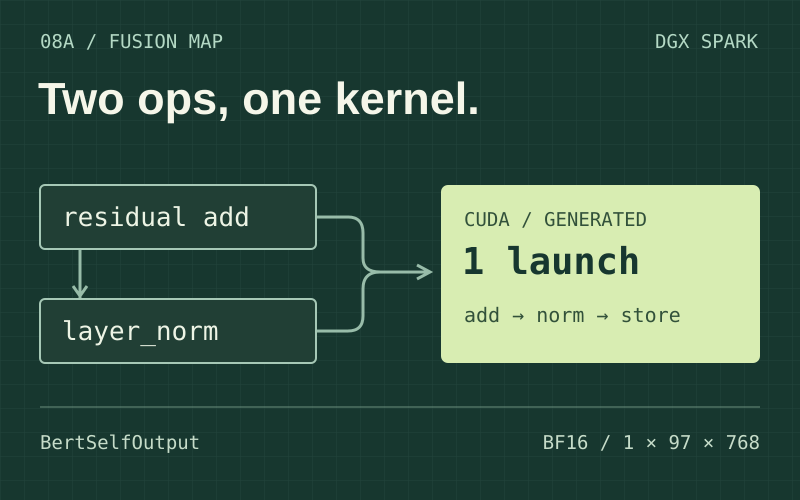

SparkFuse.
从 PyTorch 计算图，到一次 CUDA 发射
BERT 在一次注意力计算之后，把投影结果与残差相加，再做 LayerNorm。SparkFuse 从 torch.export 图中识别这两个相邻算子，生成可读的 CUDA C++。前面的线性投影仍由 PyTorch 执行。

GPU 执行变快，调用延迟呢？
前三组输入用于选型与校验，第四组独立计时。CUDA Graph 重放测 GPU 执行时间；另一个实验从主机发起调用，一直计到 GPU 同步完成。两项测量给出了不同的排序。
| 执行路径 | 热设备时间 | 同步主机延迟 |
|---|---|---|
| PyTorch eager | 14.46 | 27.52 |
| SparkFuse 默认布局 | 14.20 | 47.09 |
| SparkFuse 实测选型 | 12.86 | 45.92 |
在这组输入上，选型缩短了 GPU 执行时间；从主机发起单次调用，eager 仍然更快。TorchInductor 未通过这次逐元素精度检查，因此不列速度。数据仅覆盖这个输出模块。
32B 解码：两条路径共用一份权重
单台 DGX Spark 以 BF16 运行 Qwen2.5-32B 的全部 64 层。预填充分别读取 gate 和 up 投影；逐 token 解码将两次投影合为一次矩阵乘法，再调用生成的 CUDA SwiGLU。两条路径复用同一块权重存储，无需另存 33.75 GiB 的合并权重。
| 输入长度 | PyTorch eager | SparkFuse 共享权重 |
|---|---|---|
| 128 token | 284.52 | 284.52 |
| 2,048 token | 310.84 | 310.39 |
两种输入长度各用两条独立提示验证：生成的 token 相同，在相同前缀上逐步比较，整份 logits 也逐字节一致。四个计时请求的中位数接近，不能据此判断共享权重让整模型解码更快。
把同一条 128-token 输入分两段预填充，第 6 个输出 token 变了；即使不恢复缓存，也能重现。固定解码输入后，八条分支中，原地分段与恢复快照两种方式的全词表 logits 都逐位相同。用原始 BF16 数据复核这次分歧 ↗
72B 服务：哪些前缀不用重算？
单台 DGX Spark 运行 Qwen2.5-72B-Instruct（Q4_K_M）。llama.cpp 的 CUDA 后端执行模型；SparkFuse 根据输入 token 选择缓存槽，并核对实际复用量和输出。
| 输入长度 | 预填充中位数（ms）：关 → 开 | 输出逐 token 相同 |
|---|---|---|
| 256 token | 753 → 279 | 3/4 对 |
| 2,048 token | 6,072 → 286 | 4/4 对 |
两个槽依次处理六个请求时，交替流量下两种路由的预填充量分别为 2,088 和 2,088 token。换成折返流量，轮询需要处理 6,144 token，按最长前缀选槽需要 2,088 token；两种策略的输出有 11/12 对完全一致。这里测的是串行请求，不是并发吞吐。
对同一份文档连续提四个问题，每条输入均为 2,048 token。每次重算前缀，四条请求的总耗时中位数为 45.28 秒；从第二条起按需复用前缀，用时 27.99 秒。三轮共 12 条输出都与重算一致。保持输入长度，换一份文档，耗时相近，但只有 9/12 条输出一致。四组文档与长度组合中，预先单独计算前缀都没有比按需复用持续节省 3%。比较四条请求的累计开销 ↗
120B 稀疏模型：增大微批值得吗？
单台 DGX Spark 加载 gpt-oss-120b 的全部 36 层和输出层。每层从 128 个专家中选 4 个计算。SparkFuse 用同一套 llama.cpp CUDA 后端启动四次，交换物理微批 128 和 512 的测试顺序。
| 输入长度 | 请求耗时中位数：微批 128 / 512 | 四次输出一致 |
|---|---|---|
| 256 token | 1.03 / 0.94 秒 | 0/2 条 |
| 2,048 token | 2.74 / 1.56 秒 | 1/2 条 |
四次启动中，只有一条提示的输出逐 token 相同。按每条提示各出现一次计算，部署建议是保留 128。这个选择只适用于已测的四条输入。
一台 Spark 跑 235B，单个请求要多久？
Qwen3-235B-A22B 的两片 Q2_K 权重共 85.69 GB。校验完整文件后，llama.cpp CUDA 后端加载了全部 94 层和输出层。每层从 128 个专家中选 8 个参与计算。
| 输入长度 | 请求耗时中位数 | 重复请求输出一致 |
|---|---|---|
| 128 token | 1.74 秒 | 2/2 条 |
| 1,024 token | 5.07 秒 | 2/2 条 |
每种长度测两条提示，再倒序各跑一次。整机可用内存每秒采样一次：装载阶段最低 35.9 GiB，请求阶段最低 35.5 GiB。这里验证能否运行，没有测量量化对回答质量的影响。
单台 DGX Spark 上的 GLM-4.5 355B
两个 UD-IQ1_S 权重分片合计 97.05 GB。固定生成 16 个 token，输入 128 和 1,024 个 token 时，请求耗时中位数分别为 2.59 秒和 9.81 秒。4 条提示各运行两次，每对输出 token 均一致；这项测试不评价回答质量。
另测八份清单，要求只返回更新后的代号，最多生成 12 个 token。无论是否复用前缀，GLM-4.5 都是 0/8，Qwen3-235B 都是 8/8。查看逐项判分 ↗